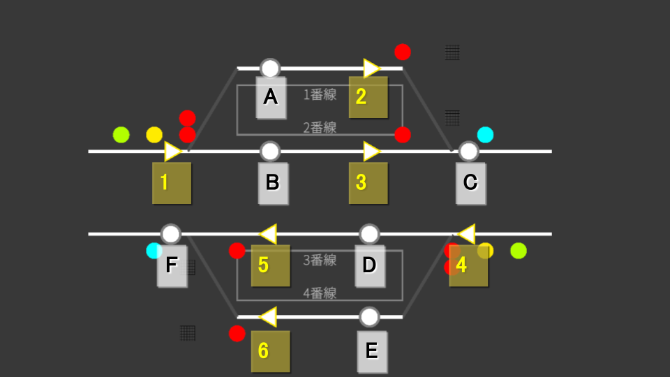

🎯 マップ概要
平海島は、4番線構成の都市駅です。 待避線を備えており、急行が普通列車を追い越す様子を楽しめます。 折り返し運用はなく、本線を列車が通過していくシンプルな構造で、初めて遊ぶ方にもおすすめのマップです。
- 番線: 1番線 / 2番線 / 3番線 / 4番線
- 待避線: あり（急行の待ち合わせで使用）
🗺 てこの配置図

駅構内のてこ（発点・着点）と番線の位置関係を上の図で確認してください。
🔧 進路一覧
進路は発点てこと着点てこの組み合わせで構成されます。 例えば進路1Aは、発点てこ「1」と着点てこ「A」で開通させる進路を指します。
平海島の進路はすべて本線用（入換進路なし）です。発点てこは黄色で光ります。
| 進路名 | 発点 → 着点 | 用途 |
|---|---|---|
| 1A | 1 → A | 下り本線から1番線に進入する進路 |
| 1B | 1 → B | 下り本線から2番線に進入する進路 |
| 2C | 2 → C | 1番線から下り本線へ出発する進路 |
| 3C | 3 → C | 2番線から下り本線へ出発する進路 |
| 4D | 4 → D | 上り本線から3番線に進入する進路 |
| 4E | 4 → E | 上り本線から4番線に進入する進路 |
| 5F | 5 → F | 3番線から上り本線へ出発する進路 |
| 6F | 6 → F | 4番線から上り本線へ出発する進路 |